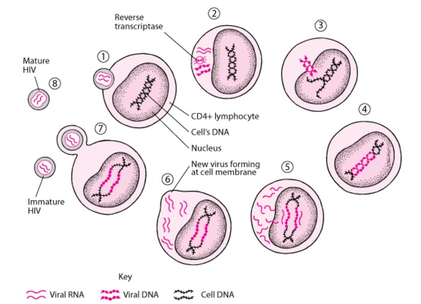
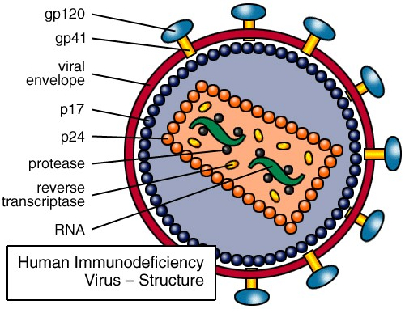
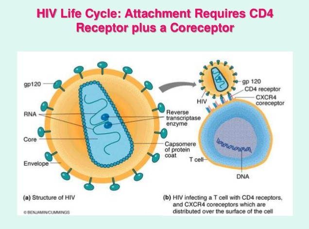
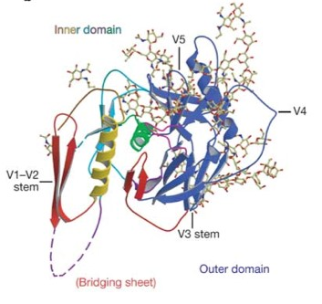
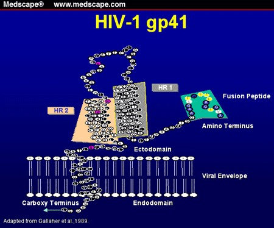
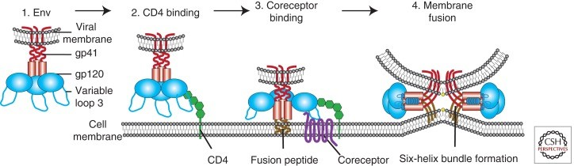

HIV (Human Immunodeficiency Virus) infection and AIDS (Acquired Immune Deficiency Syndrome) are conditions that result from infection with the human immunodeficiency virus (HIV). Primary spread of the virus occurs through exchange of bodily fluids during unprotected sex; through blood from contaminated blood transfusions, and exchange of hypodermic needles in IV drug users; and from mother to infant, in utero, during delivery, and post-delivery from breastfeeding with infected breastmilk.
After infection, viral loads quickly increase, followed by an asymptomatic latency period that can last several years. After this latency period, the virus resumes rapid replication and the increased viral loads decrease T cell counts, causing interference with the normal functioning of the immune system. This period is referred to as the progression to AIDS. As the immune system begins to suffer, the AIDS-infected person becomes susceptible to a number of secondary infections, such as tuberculosis, which can ultimately lead to death.1
According to the World Health Organization, around 36.7 million people were living with HIV infection in 2015, and HIV was responsible for 1.1 million deaths that year. Since its discovery, HIV/AIDS has been responsible for nearly 40 million deaths worldwide.2
In order to successfully treat and/or prevent the spread of HIV infection, it is essential to understand its mechanisms of infection and replication, as well as its complex relationship with the host immune system. Considerable research has been done to elucidate the HIV life cycle and mode of infectivity. One such area of inquiry has focused on the way in which HIV attaches and fuses to the host cell membrane, and the receptors, co-receptors, and ligands involved. As will be discussed, the HIV virus contains glycoproteins that bind to receptors on the cell membrane; however, it wasn’t until around 1995 to 1996 that researchers discovered the presence of a co-receptor (chemokine receptor) was necessary for successful cell attachment and fusion.3 The role of the chemokine receptor will be illustrated in greater detail, but first, however, it is necessary to describe the HIV life cycle and mechanism of infection.
HIV is a type of virus known as a retrovirus, referring to the “backwards” process of its viral replication. HIV’s genetic information is stored in the form of RNA, and not DNA. When HIV infects a white blood cell, it releases its RNA into the cell and an enzyme (reverse transcriptase) converts it into viral DNA, which is then incorporated into the host cell. This process of reverse transcription may result in mutations, as the enzyme does not have proof-reading capability. HIV’s ability to have multiple mutations has contributed greatly to its success in not being controlled by the host immune system or treated with drugs. Figure 1 illustrates a simplified life cycle of the Human Immunodeficiency Virus and how it uses the genetic machinery of the cell it infects to produce more copies of itself.
In step (1), the virus attaches to and penetrates the CD4+ target cell. It next (2) releases its RNA into the cell where it is converted into viral DNA by the enzyme reverse transcriptase. Then, (3) the viral DNA travels to and enters into the cell nucleus. The HIV-produced enzyme integrase (4) allows the viral DNA to integrate with the host cell DNA. In step (5), the genetic machinery of the cell has been “hijacked” by HIV, and it now produces new viral RNA and proteins. In (6), the newly produced viral proteins and short pieces of RNA assemble to form a new virus. The new virus then pushes through and buds off from the cell membrane (7) forming an immature HIV. Another enzyme, HIV protease, cuts structural proteins in the virus causing a rearrangement in its structure (8) which allows the virus to function as a mature HIV. This mature HIV can now infect other cells and start the cycle over again.4
The role of the chemokine receptor in HIV infection occurs during the first stage (attachment and fusion of the virus to the host cell), so this stage will now be examined further. In order to do so, it is important to understand the structure of HIV, illustrated in Figure 2, below:
The HIV capsid core, which contains RNA and viral proteins, is surrounded by a shell called the viral envelope. This envelope contains the viral protein “Env”. This protein makes up gp160 which gets cleaved in the endoreticulum to its trimeric glycoprotein structure composed of gp120 (the external subunit that forms the cap of the glycoprotein) and gp41 (the heterodimeric transmembrane subunit that forms the stem of the glycoprotein) subunits.
Many attachment factors can help bring Env within close proximity to the host cell receptor and co-receptor and enhance their binding. Env can non-specifically interact with heparin sulfate proteoglycans, which are negatively charged. A more specific interaction occurs when Env interacts with integrin α4β7, which activates lymphocyte function-associated antigen 1 (LFA-1), a cell-adhesion molecule found on the surface of T-cells, macrophages, as well as other cells. Env can interact with dendritic cells via the pattern recognition receptor (PRR), dendritic cell-specific intracellular adhesion molecular 3-grabbing non-integrin (DC-SIGN). It is important to note that all of these attachment factors can aid and enhance Env/receptor binding, but none is essential. What is required, however, is binding of Env to the host protein CD4, its primary receptor; and as will be later discussed, a chemokine co-receptor (Figure 3).
CD4 (Cluster of Differentiation 4) is a cell surface marker glycoprotein found on the surface of T helper cells, macrophages, monocytes, and dendritic cells. A member of the immunoglobulin superfamily, CD4, in its normal immune function binds to MHC Class II molecules and acts a co-receptor that assists the T cell receptor in communicating with an antigen presenting cell. In HIV infection, gp120 binds to CD4 and undergoes a conformational change, allowing for interaction with the chemokine receptor.
The gp120 subunit contains five conserved domains (C1-C5) and five variable loops (V1-V5) which contain disulfide bonds at their base (except for V5). These variable loops are located primarily at the gp120 surface and are essential for co-receptor binding. When Env binds to CD4, V1 and V2 rearrange, leading to a subsequent rearrangement of V3. In addition, this conformational change leads to the formation of a four-stranded beta sheet composed of two, spatially separated double-stranded beta sheets, known as a bridging sheet (Figure 4). The formation of this bridging sheet and rearrangement of variable loop 3 are critically important to the subsequent co-receptor binding.
Binding to the chemokine co-receptor triggers the process by which HIV can fuse to the cell membrane. After co-receptor binding, a conformational change occurs that exposes the hydrophobic N-terminal gp41 fusion peptide, allowing it to penetrate the cell membrane (Figure 5). HR1 and HR2, which are repeat sequences in gp41, interact to cause the collapse of the extracellular portion of gp41 into a hairpin loop. The formation of this hairpin brings the virus and cell membranes closer together.
Insertion of gp41 into the host membrane tethers them together, allowing for each of the trimeric gp41 fusion peptides to fold at a hinge region. This folding brings helical bundles from the amino terminus and the carboxyl terminus together to form a six-helix bundle. The N-terminal helical bundle is close to the host cell membrane and the C-terminal helical bundle is close to the viral membrane. When the six-helix bundle is formed, it brings these two membranes together, which results in the formation of a fusion pore. The contents of the HIV capsid core can now enter the host cell through this pore and begin the process of reverse transcription.5 A visual summary of this process is illustrated in Figure 6, below:
